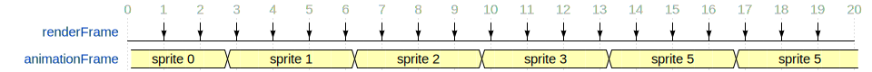
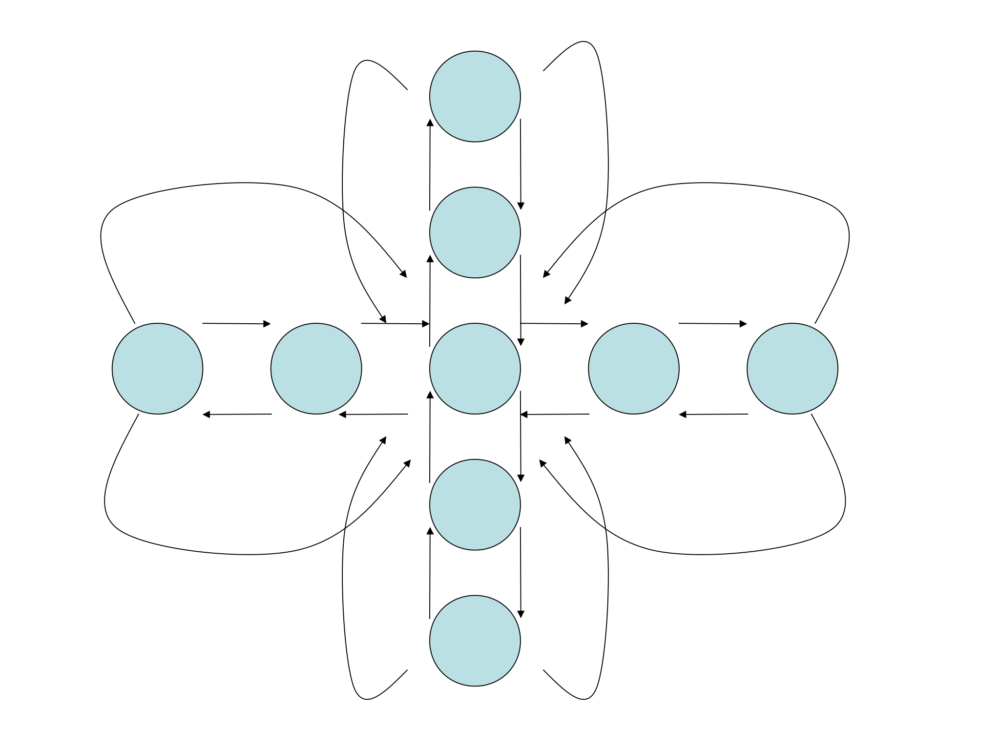

Sprite Animation
shearer12345
Overview
What are sprites?
What is sprite animation?
What are sprite sheets?
Challenges in sprite animation
Sprite Files
Texture Animation
Video Textures
What are sprites?
A Sprite is a 2D image, usually used within a video game.
Usually, partially transparent

Kenny Platformer Pack: p1_front
What is sprite animation?
Changing between a set of sprites over time, to give the impression of change
movement
shape change
…
What is sprite animation?
(for platforms not supporting apng)
Changing between a set of sprites over time, to give the impression of change
movement
shape change
…
What are sprite sheets?
Single images containing multiple sprites and/or multiple frames of sprite animation

Kenny Platformer Pack: p1_walk spritesheet
Challenges in sprite animation
Sprites within sprite sheets
selecting the right set of pixels for each sprite
Animation Cycles
selecting the right sprite at the right time
smoothing the transitions
animation frame rate != render frame rate
Multiple Animation Cycles
when to transition from one cycle to another
Sprites within sprite sheets
selecting the right set of pixels for each sprite
Kenny Platformer Pack: p1_walk_annotated spritesheet
Why Sprites within sprite sheets?
More efficient
in general, it is more efficient to have larger images and draw from just part of them
Sprites within sprite sheets
Somehow we have to figure out which area of the sprite sheet correspond to each sprite
we NEED more information to do this
it might be implicit - i.e. we expect all sprite sheets to conform to some standard
we might have that information in another file (or directly in our source code) (or, in theory, embedded in the meta-data of the image)
Sprites within sprite sheets
Let’s have a closer look at the sprite sheet
Animation Cycles
animation frame rate != render frame rate
selecting the right sprite at the right time
smoothing the transitions
Animation frame rate != render frame rate
Our sprite frame rate is frequently lower than our render frame rate
Our render frame rate is frequently variable

Selecting the right sprite at the right time
When do we move from one sprite to another?
Usually at a fixed rate
e.g. 10 sprite frames per second
so we need to keep track of real time, and animation time
How do we represent where in the animation cycle we are?
which frame? or a normalised float?
DISCUSS …
Smoothing the transitions
Frequently our sprites frame rate is lower than our render frame rate
we could somehow try to smooth between images to smooth out the transitions
this is really hard
better to do offline
or use another animation techniques (e.g. skeletal animation)
Multiple Animation Cycles
when to transition from one cycle to another?

Sprite files
the imagery
meta-data
Sprite files - imagery
What file formats is the image data stored in?
Most image formats are, or can be, used.
bmp
gif
jpg
png
…
Sprite files - meta-data
json
xml (e.g. taml)
custom
…
Texture Animation
If we’re using OpenGL (or DirectX) we can still do sprite animation
It is straightforward with texture
Each image is a texture
the pixel coordinates become UV coordinates
SDL’s 2D renderer (usually) uses OpenGL - just like this
Video Textures
We can also use video as a source for textures
Pros? Cons?
Activities
Using C++, using SDL2’s 2D renderer - no OpenGL
unless you want to
Have an starting point at at https://github.com/shearer12345/graphicsByExample/tree/master/src/sdl_noOpenGL
Get the starting point
Windows
git clone --recursive https://github.com/shearer12345/graphicsByExample.git #(1)The Windows dependencies are in a separate repository, connected as a submodule. The
--recursiveflag asks git to also pull down all the submodules. If you miss it by accident, you can after dogit submodule init, followed bygit submodule update
Build the starting point
git checkout sdl_noOpenGL
git pull
./premake5.bat vs2015Load the
.slnfileBuild and run sdl_noOpenGL you wish to explore - kbd:[F5]
Delete the other projects if you want
i.e. the other directory in src
run premake again after
Change the size of the displayed sprite
The example uses
SDL_RenderCopyto put the sprite on the screenWhat are the two parameters that are presently NULL
Make the sprite be half the height/width of the window and centered
Make the sprite 20 pixels square
Make the sprite moveable on a key press
Getting more sprites
There are some nice copyright free assets at http://open.commonly.cc/
Get a set of sprites that you like.
Sprite sheet
Load one of the sprite sheets and show it as the whole sprite
Use the other parameter of
SDL_RenderCopyto only show the first sprite from the sprite sheetMake pressing a key move to the next sprite sheet
Animated sprites
Make the sprite animate by moving forwards 1 sprite frame per rendered frame
make it 1 sprite frame per 10 rendered frames
make it 1 sprite frame per second
Meta-data
Animation cycles are usually specified in separate files
Look through the assets you downloaded and figure out which files
Try to use that data in your program.